Within a pod template, any text written in "track changes" mode is interpreted as a Python expression. The interpretation context is given to pod like explained here. The example below contains some simple Python expressions (Python variables).
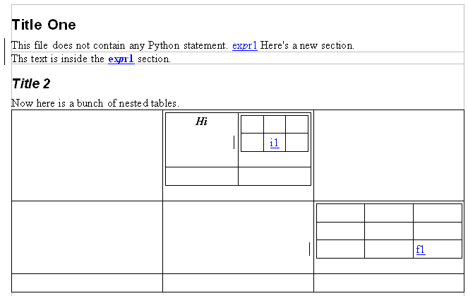
Running appy.pod with a context that associates a value to expr1, i1 and f1 produces a result like the one shown below.
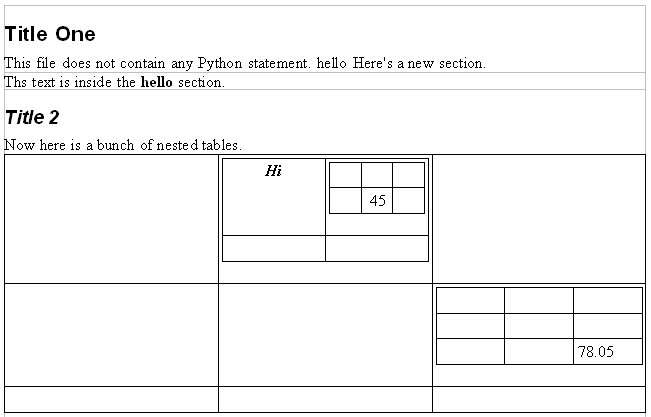
Note that any style (bold, italic, etc) that is used within track-changed text is kept, but style variations within the text is ignored. For example, the first "expr1" text has an italicized "p", but this style information is ignored. The second "expr1" is bold, so the result is bold, too, and again the having an italicized "p" has no effect.
An "if" statement is written in an ODT note and has the form do <document part> if <python_expression>. The <document part> which is the target of the statement will only be included in the result if the python expression resolves to True (the boolean value, or any equivalent Python value, like a non empty list, string, etc). "Document parts" that can be referenced in "if" statements are presented in the table below.
| Name | Description |
| text | A paragraph |
| title | A title |
| section | A section |
| table | A whole table |
| row | A single row within a table |
| cell | A single cell within a table row |
A "for" statement is also written in a ODT note and has the form do <document part> for <variable_name> in <python_expression>. The <document part> which is the target of the statement will be included as many times as there are items in the sequence that is defined by the <python_expression>. Within the document part in question, one can use <variable_name>, or any Python expression that uses it, within track-changed text (it adds this name in the context). Allowed <document part>s are those described in the previous table. If <variable_name> was already defined in the context, it is hidden by this new variable definition only within the scope of the targeted <document part>.
The example below contains several "if" and "for" statements. Small yellow rectangles are ODT notes that you insert, for example, through the "Insert->Note" menu in OpenOffice. Yellow blocks containing Python code represent the content of the note.
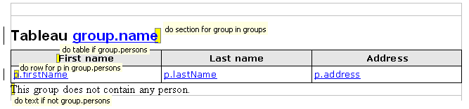
Applying this template with a given context may produce a result like the following.
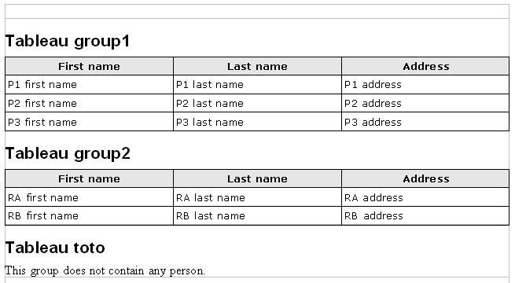
The template contained 1 section. The result contains 3 sections, because 3 groups were defined in the groups variable (which was a Python list or tuple containing instances of some Group class defined somewhere in a python file) used in the 1st "for" statement. The 2 first groups contained persons (instances of some Person class), so the table was rendered in the 2 first sections (this is the effect of the second note). Those tables contain one row by person, thanks to the "for" statement in the third note. The last paragraph of the template was only rendered once, for the last group, because this group contained no person (this is the effect of the last note).
In this example, for each group, I wanted to include a table if persons were defined, or a paragraph else. In order to express this, I've defined 2 "if" statements with 2 conditions, one being the negation of the other. pod (starting from version 0.2) allows to use "else" statements: instead of writing do text if not group.persons in the last note, I could have written do text else instead. But do you believe I have time to rework those old screenshots? Moreover, you have to be careful with "else" statements. pod statements are independent of each other: an "if" statement and an "else" statement are really 2 different statements, unlike what happens in programming languages for example. It means that pod must be able to link "if" and "else" statements, and in some cases it is not possible. The following example contains several "else" statements that pod could unambiguously link to their corresponding "if" statements.
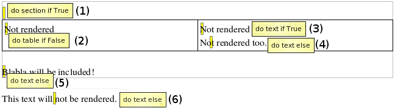
When pod encounters an "else" statement, it tries to link it to the last defined "if" statement in the part of the pod template that precedes the "else" statement. In the last example, when encountering the "else" statement numbered "4", pod links it to the "if" statement numbered "3". Once the link is done, the linked "if" statement is "consumed": it can't be linked to any other "else" statement. When pod encounters the "else" statement numbered "5", it links it to the last "unconsumed if" statement: the "if" statement numbered "2". In the same way, the "else" numbered "6" is linked to the "if" numbered "1". Here is the result:
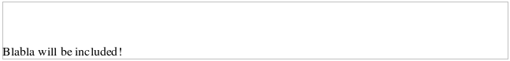
In the example below, however, pod does not produce the desired result.
Here I wanted to link the "else" to the first "if", but pod linked it to the second one instead, mistakenly rendering the last line:
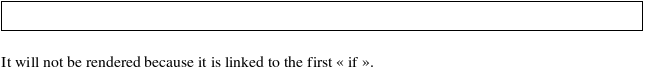
With the currently presented concepts, here you would be forced to replace the "else" by an "if" that duplicates and negates the condition written in the first "if". This duplication could lead to maintenance problems (ie you update the condition in the first "if" and forget to update its negation in the third one). So if we want to conform to the null-IT principle and make pod a tool as invisible as possible, we need here the concept of "named statement". From pod 0.2, any statement may be named. The name must conform to the regular expression "\w+" (it can contain alphanumeric characters only + the underscore as explained here) and must be unique among the (not consumed) named statements in the pod template. The next example is the right way to produce the result we wanted to achieve in the last example: the first "if" is named and can thus be referred to explicitly by the "else".
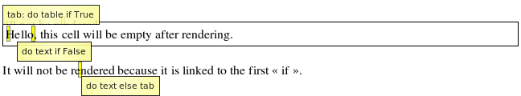
The result is superb! pod is invisible!
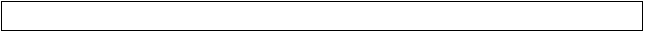
Note that it is legal to name any pod statement; however, pod uses statement names only for connecting "if" and "else" statements (at least for now).
You can place statements anywhere within the element you want to repeat or conditionally include. In a table, for example, you can place a "do table..." note in any cell of the table. The only thing you have to take care of is the order of notes that apply on nested elements. For example, a note that applies on a table must be placed in the table before a second note that applies on a row of this table. This note must itself be placed before a note that applies on a cell within that row. In the first cell of a table, for example, you can define several notes sequentially: one for the table, one for the row and one for the cell.
Besides the "if" and "else" statements, pod also proposes an "if" expression. Indeed, if the things you want to conditionnally include are small enough (a few words for example) you may find more convenient to use the "if" expression, that is implemented as a function named "test" that is directly available in the pod context as a default function. Here is an example:
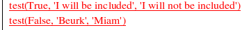
The result:
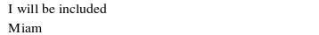
While interpreting expressions or statements, errors may be raised. In such cases, the result is still generated, but a note containing an explanation about the error, together with the Python traceback, is produced in a note instead of the expression result or the document part that is the target of a statement.
The example below defines an expression that uses a variable "A" that is not defined.
Instead of containing the result of evaluating A+B, the result contains a note that gives an explanation about the error and the Python traceback, as shown below.
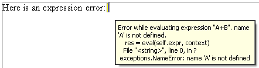
In the next example, we try to render a table if a condition is True, but evaluating the condition produces an error.
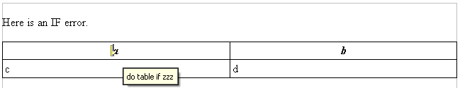
The table is rendered but only contains a note explaining what happened.
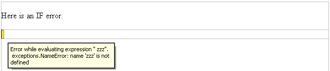
The following example illustrates errors produced while evaluating "for" statements.
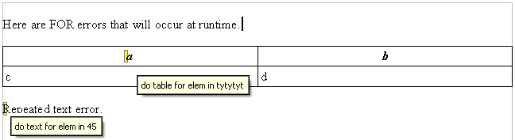
Notice that in the result shown below, the second note does not contain a traceback. Indeed, Python did not produce an error while evaluating expression 45. pod simply expected a sequence.
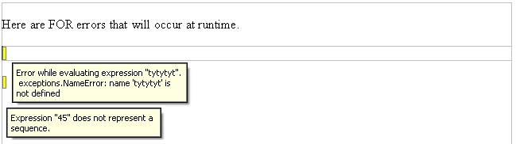
The previous examples were all examples of "runtime" errors, ie errors that were produced while rendering the template. Errors may also occur at "parsing" time, when pod reads the content of notes and track-changed text to analyse the Python-like expressions. In the example below, statements do not respect the pod syntax.
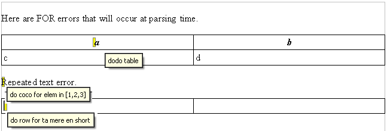
Oh! So much effort has been made to produce clear error messages that I do not need to add a comment here :-)
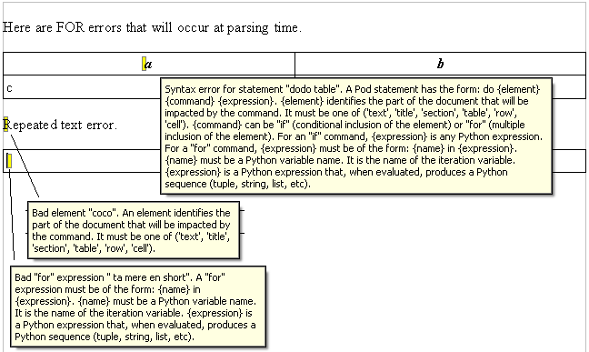
Playing with table cells may render tables that do not contain a number of cells that produce complete rows. In the example below, the "for" statement will produce 5 cells in a 3-columns table (there are 3 persons defined in persons). So there is one missing cell. If you are bored with my explanations, you can make a pause now and listen to some musical illustration of this "missing cell" problem (ok I agree the artist has its own point of view on this question).
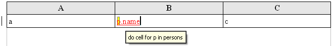
Hurrah! pod added the missing cell for you.
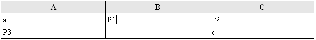
Sometimes the number of cells it too high. In the example below, again 3 persons will be inserted, producing a row of 6 cells instead of 4.
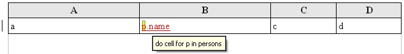
Hurrah again. pod broke this row into 2 complete rows.
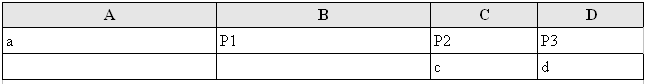
Who said it is exactly the same problem as the previous one? Hmm. Hmm. Indeed. Ok. I must recognize that "too much" or "not enough" cells is just a question of point of view. You're right. But I will not change the names of my test files or refactor them to eliminate redundant ones. You are aware of this strange situation, now let's continue.
Conditional inclusion of cells through statements like do cell if trucmuche raise the same issues and are solved by pod in the same way.
In order to avoid having some cells to lack a right border like on my screenshots, check that all your table cells have 4 borders.
Very often, when creating complex pod templates, you will create sections containing tables containing tables of tables of tables etc. Those hierarchical levels exist just because you need to insert a statement, but you don't care about keeping them in the final result. You can tell pod to remove tables and sections from the final result by using the "minus" operator, like shown below.
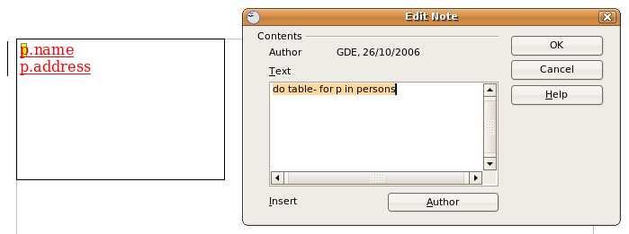
The result, produced while persons is a list of 8 persons, is shown below.
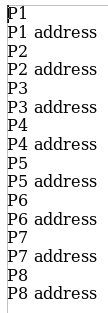
Of course, do that only if you don't care about any formatting associated with the table or section to remove. In the previous example, using the "minus" operator was not the right choice if we wanted to print those addresses on envelopes. In other cases, using this operator may prevent occurrence of a bug in OpenOffice (2.1): a table that spans multiple pages may be truncated after 1 or 2 pages. Some manual edition (like inserting a "carriage return" somewhere) is needed to correct this problem; so if you planned to convert your result automatically to PDF for example you are KO.
The "minus" operator is only allowed for sections and one-cell tables. When applying it to a table that has more than one cell...
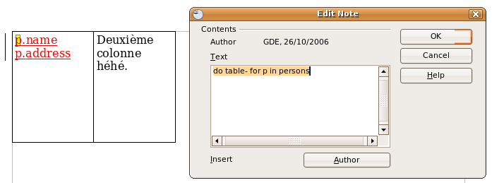
... pod complains.
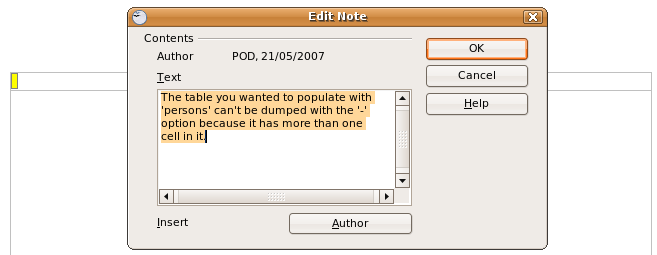
pod templates should be as readable as possible. One day (who knows?), a non-developer may need to consult one of them. So try minimize the amount of Python code you put in it. For example, instead of writing a complex expression or a complex condition within a statement, think about writing this code in a Python method with a nice name and simply call it within your template (of course the object on which this method is defined must be in the pod context).
If you need to use the result of a resources-consuming method in several places within a pod template, instead of calling this method in several expressions (pod will execute the method in each expression), call it once before rendering the template and give the result under a new name in the context passed to pod.
For more information about calling pod to render a template with a given context, check here.